From your app's events to a sign-in screen that lets people in the way your event works.
The result
Your app signs people in to each event the way your event works, with your button texts and sign-in pictures, and lets new visitors register if you want it to.
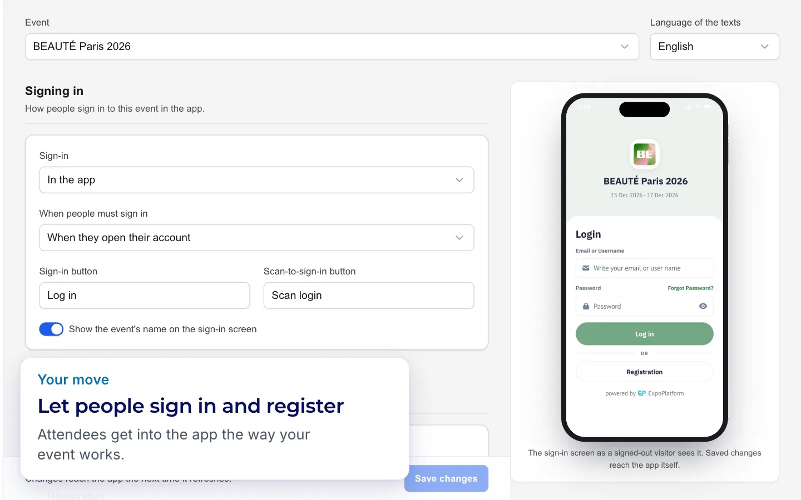
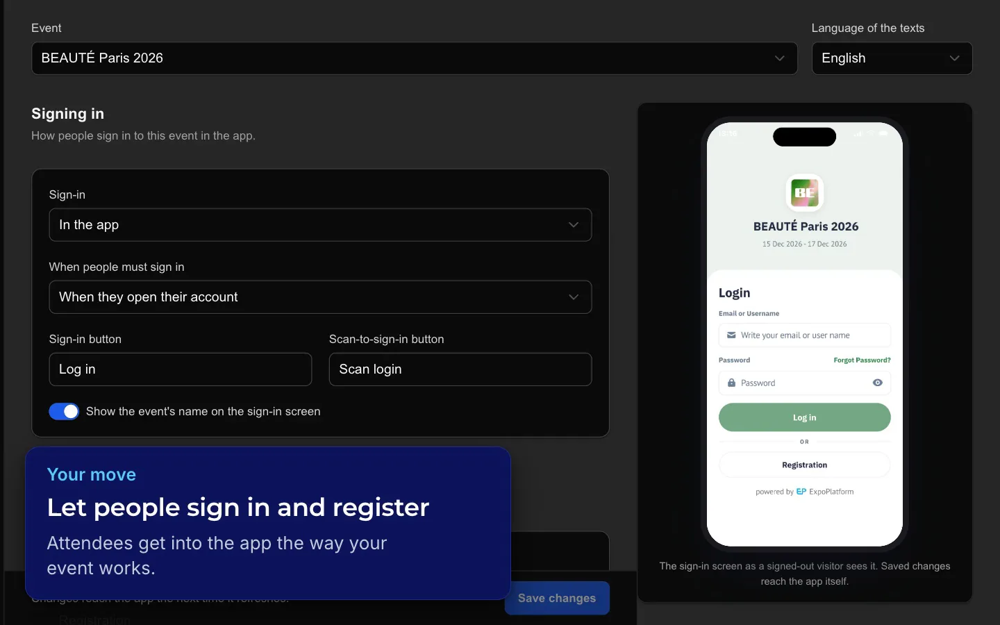
Let people sign in and register · 0:35App Studio, redrawn and animated from its code. Phone: the app in App Studio's preview, with sample content, October 2026.
Who does what
Your moveYou check the app's events, then set each event's sign-in, registration and sign-in pictures in App Studio.
Before you start, have ready
Your events in your ExpoPlatform admin. For an app with several events, give them an event tag there.
How each event signs people in (in the app, on a web page or both), and whether they must sign in right after choosing the event.
For sign-in on a web page: its address, or none to use the event's own sign-in page.
The button texts in each language your visitors use, up to 30 characters each.
Where new visitors register: the event's registration page, or another website's address.
The sign-in pictures: PNG or JPEG files of up to 10 MB, each side at least 200 px. The Login background is cropped 2:1, the Home / loading backdrop 9:16 and the Login logo square.
A wide browser window: the sign-in preview shows only on wide screens.
Stage 1 of 6
Choose the events
Sign-in & registration keeps its settings per event, so the app's events come first.
1
In Events & updates, check which events the app offers, and press Save changes if you change them.
Your move
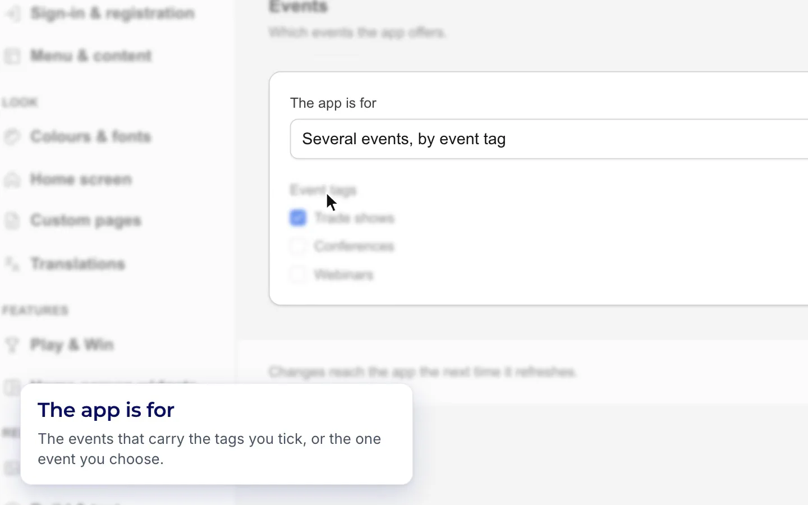
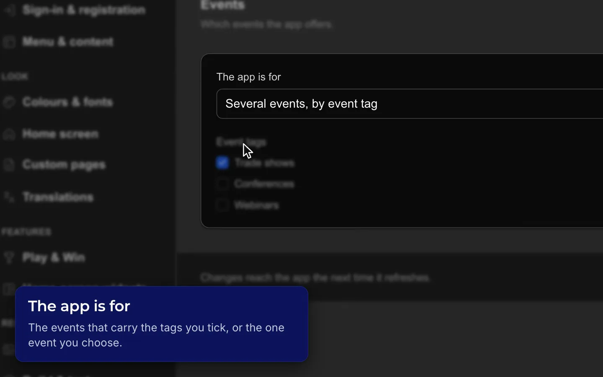
The app is for, opened in Events & updates: several events by tag, or one.App Studio, redrawn and animated from its code.Whole film
Until the app's events are chosen here, Sign-in & registration shows only a message asking you to choose them.
Watch out
For Several events, by event tag, your events need tags in your ExpoPlatform admin, and App Studio saves only with at least one tag ticked.
Saving here also writes the choice of events to your ExpoPlatform admin, which gives the app its list of events.
Done when: The events your app should offer are chosen, and App Studio says “Saved” after a change.
2
Open Sign-in & registration and choose the event in Event.
Your move
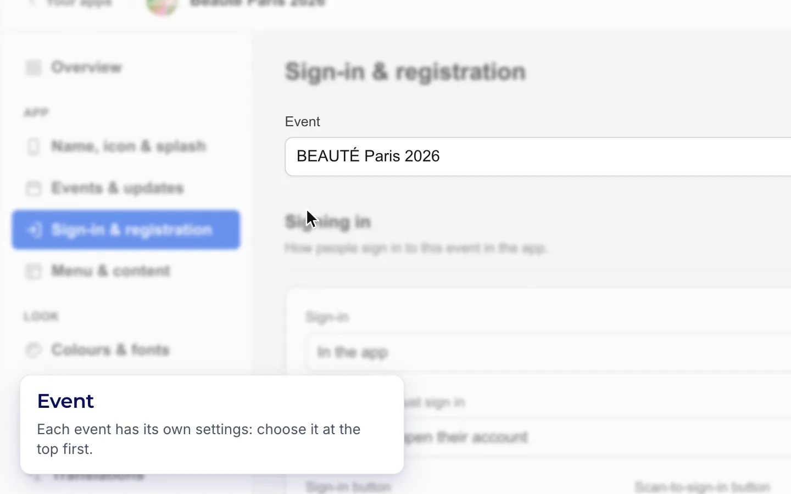
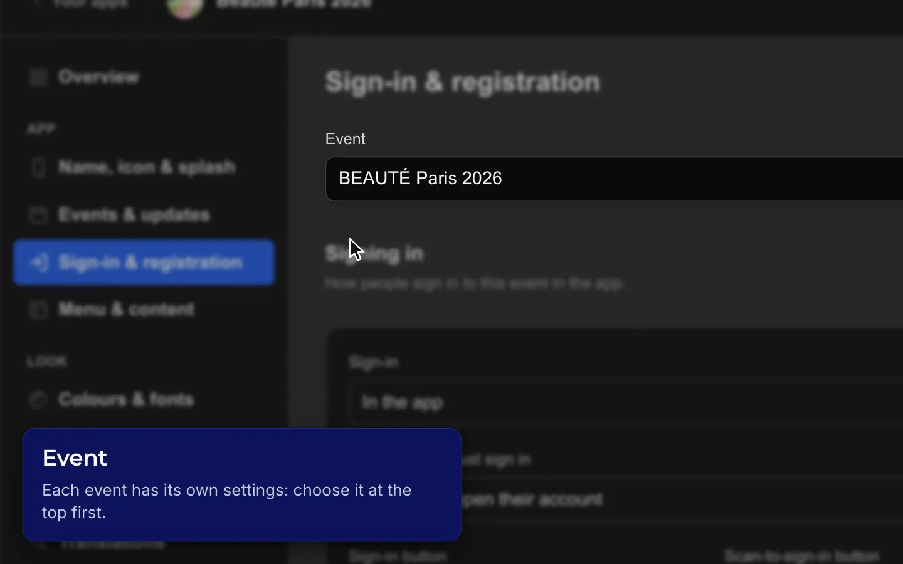
The Event list at the top of Sign-in & registration, with the app's event chosen.App Studio, redrawn and animated from its code.Whole film
Each event has its own settings, which start from its values in the old App Builder.
Watch out
Later changes in the old App Builder no longer reach your App Studio app: make them here.
Done when: The event's settings show, starting with Signing in.
Stage 2 of 6
Choose how people sign in
Set how people sign in to the event you chose. Of these settings, only the button texts are kept per language.
3
In Signing in, choose Sign-in: In the app, On a web page or Both.
Your move
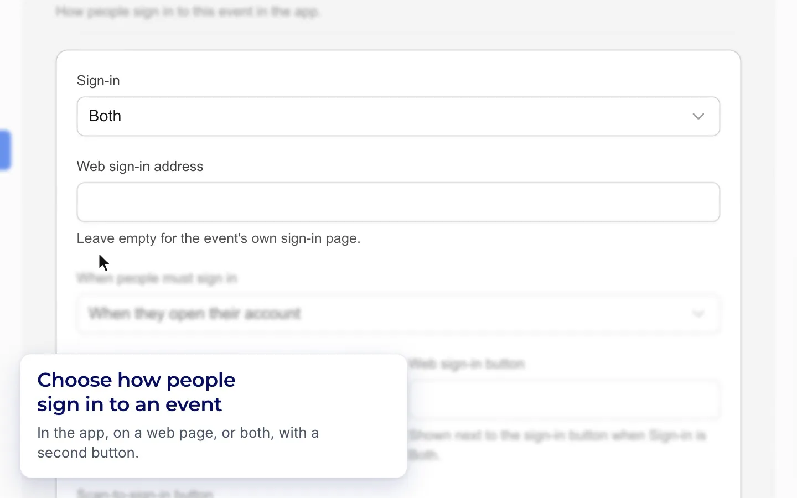
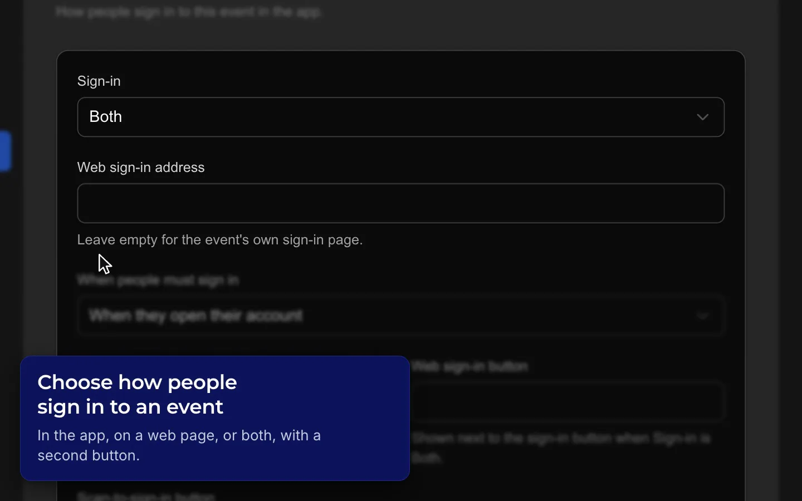
Sign-in set to Both shows Web sign-in address; In the app hides it again.App Studio, redrawn and animated from its code.Whole film
In the app signs people in with the app's own form, On a web page sends them to a web page, and Both offers both, with a second button.
Watch out
With Web sign-in address left empty, people sign in on the event's own sign-in page; an address over 2000 characters is refused when you save.
Done when: The phone preview shows the sign-in screen with your choice.
4
Choose When people must sign in: Right after choosing the event or When they open their account.
Your move
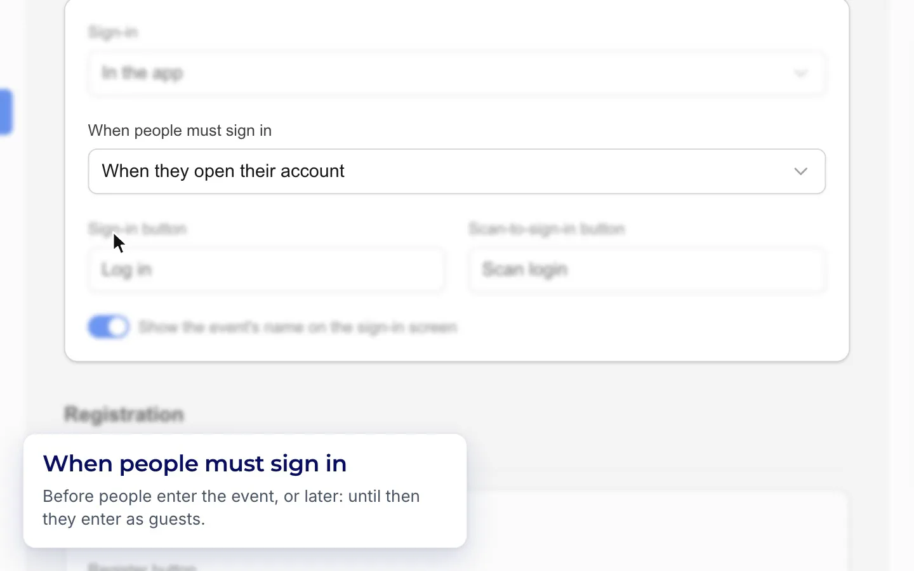
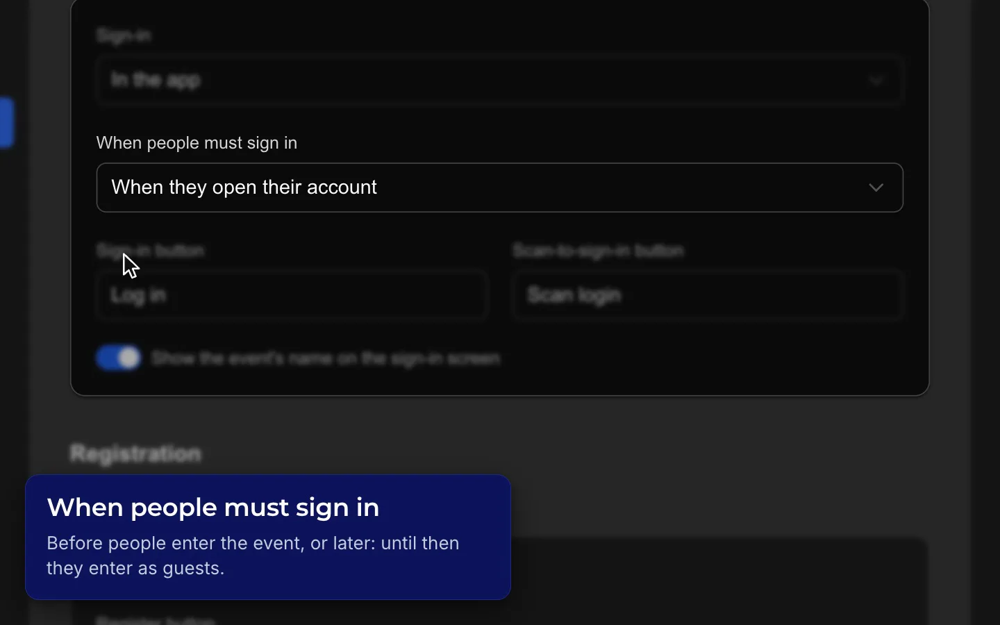
When people must sign in opened, then closed on When they open their account.App Studio, redrawn and animated from its code.Whole film
With Right after choosing the event, people sign in before they enter the event; otherwise they enter as guests and can sign in later from the side menu.
Watch out
The preview always opens on the sign-in screen, whichever you choose.
Done when:When people must sign in shows the choice your event needs.
5
Write the Sign-in button and Scan-to-sign-in button texts, and for Both, the Web sign-in button.
Your move
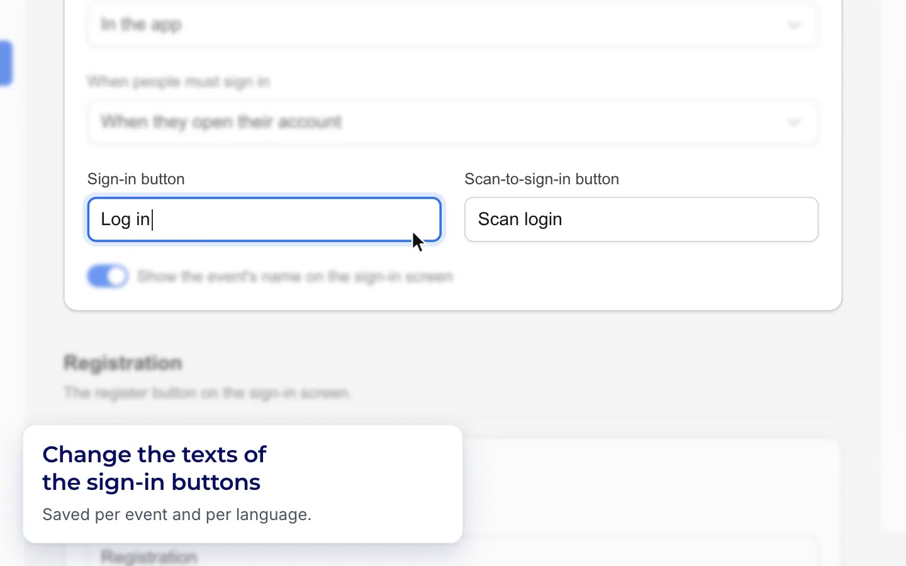
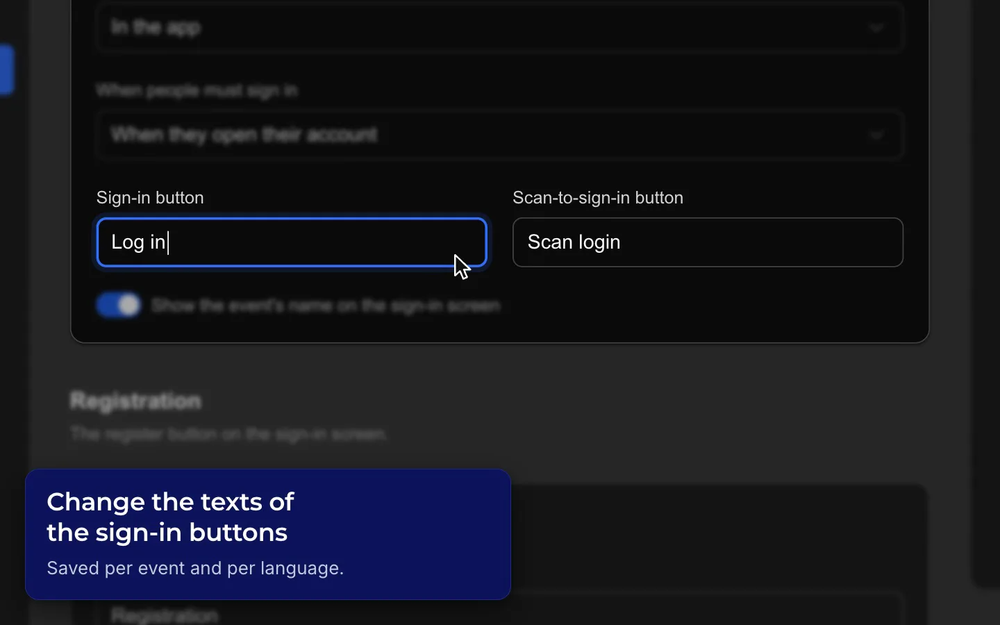
The Sign-in button text typed, beside the Scan-to-sign-in button text.App Studio, redrawn and animated from its code.Whole film
The app's sign-in screen shows them on its buttons, in each language you save them in.
Watch out
Each takes up to 30 characters; left empty, the buttons read “Log in”, “Scan login” and “Log in with SSO”.
A language you never saved them in shows the English text, else the first language written: save them in each language your visitors use.
The scan button shows only when sign-in by scanning a badge is on for the event.
Done when: The phone preview shows your texts on the buttons it shows.
6
Switch Show the event's name on the sign-in screen on or off.
Your move
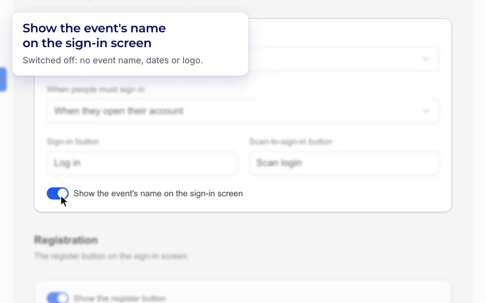
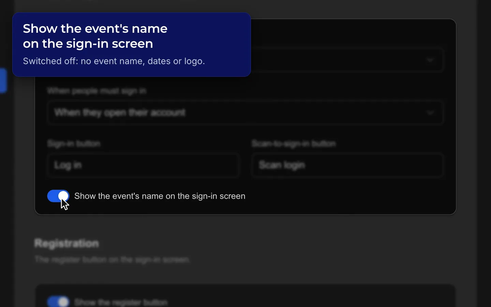
Show the event's name on the sign-in screen, switched off and on again.App Studio, redrawn and animated from its code.Whole film
With the switch off, the sign-in screen shows no event name, dates or logo at the top.
Done when: The phone preview shows the top of the sign-in screen the way you want it.
Stage 3 of 6
Let new visitors register
A register button on the sign-in screen can open the event's registration page, another website or the app's own registration form.
7
In Registration, switch on Show the register button, give it a text and choose Registration happens.
Your move
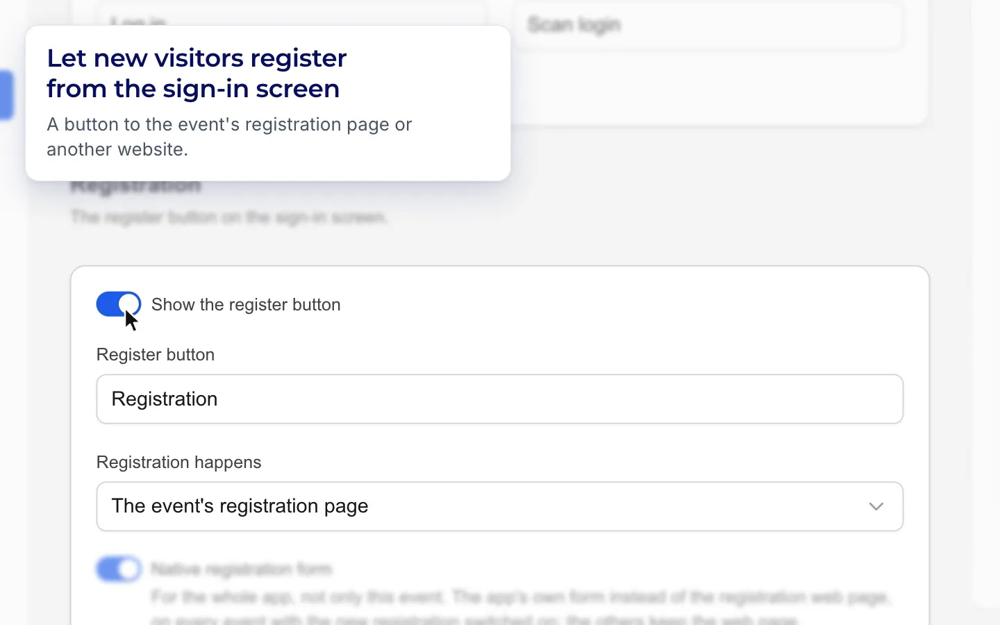
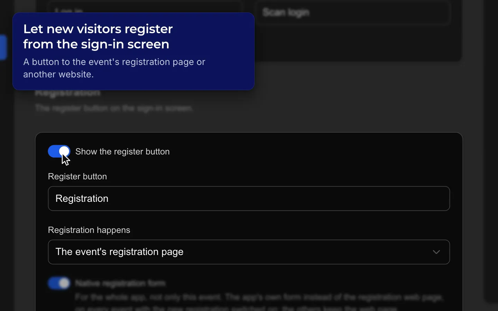
Show the register button switched off and on: the fields under it go and come back.App Studio, redrawn and animated from its code.Whole film
The button opens the event's own registration page, or the Registration website you enter for Another website.
Watch out
The button shows only while the switch is on and there is a registration address to open.
Its text is kept per language, up to 30 characters; left empty, it reads “Registration”.
Done when: The phone preview shows the register button with your text.
8
For the app's own registration form instead of the web page, switch on Native registration form.
Your move
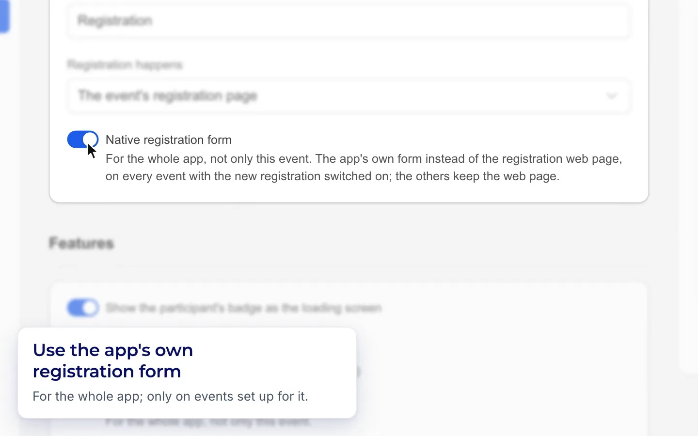
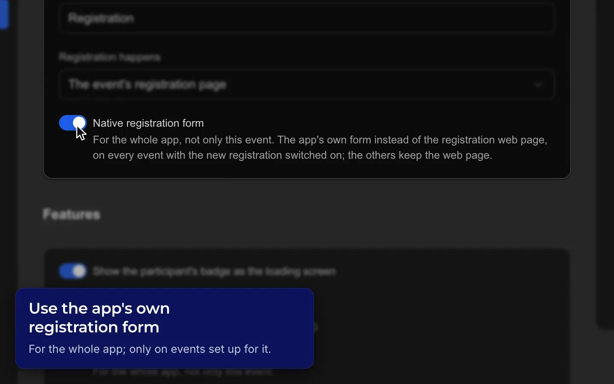
Native registration form, for the whole app, switched off and on again.App Studio, redrawn and animated from its code.Whole film
On events set up for the app's own registration form, the sign-in screen's “Registration” button and “Sign up” link then open it.
Watch out
It is for the whole app, and it shows only while Show the register button is on and Registration happens is The event's registration page.
Whether an event is set up for the app's own form is that event's own setting, not one in App Studio: other events keep the registration web page.
It is saved first: if that fails, a red message shows and the event's settings are not saved either.
Done when:Native registration form is switched on.
Stage 4 of 6
Finish and save each event
Edits stay in the form, and in the preview, until Save changes, which saves only what changed for this event and language.
9
Under Features, choose whether people see their badge while the event's data downloads after sign-in.
Your move
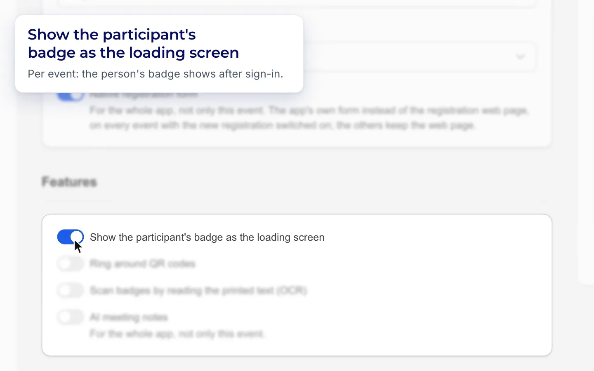
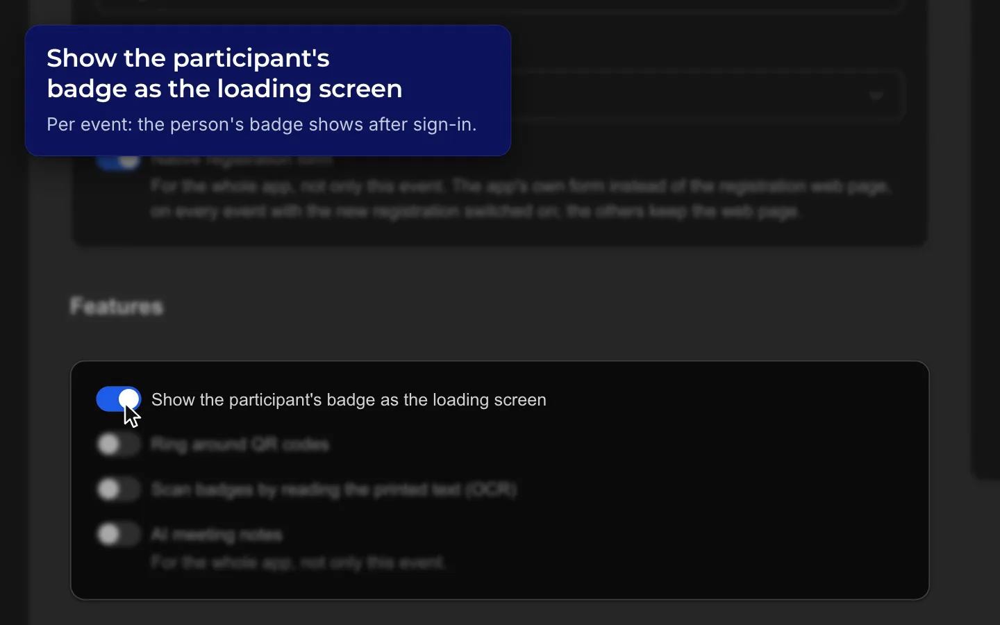
Show the participant's badge as the loading screen, under Features, switched off and on again.App Studio, redrawn and animated from its code.Whole film
With Show the participant's badge as the loading screen on, the person's digital badge fades in over the loading screen while the event's data downloads.
Watch out
It is not for exhibitor company owners, and it shows only when the person has a QR code.
AI meeting notes, in the same block, is for the whole app: switch it only if you mean every event.
Done when: The badge switch is set the way you want it for this event.
10
Check the sign-in screen in the phone beside the form, then press Save changes.
Your move
Sign-in & registration
Saved
“The sign-in screen as a signed-out visitor sees it. Saved changes reach the app itself.”
“Changes reach the app the next time it refreshes.”
Drawing based on App Studio's code: The line under the phone, and the save bar after a save
The phone shows the event's sign-in screen as a signed-out visitor sees it, with your unsaved changes.
Watch out
If you see no phone, widen the window: the preview shows only on wide screens.
The preview draws the event's stored logo, list background and sign-in button colours, which this section has no field to change.
Done when: App Studio says “Saved”.
11
Repeat the button texts for each language, and the whole section for each event.
Your move
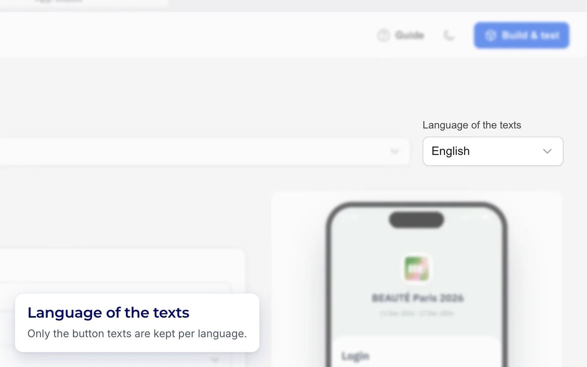
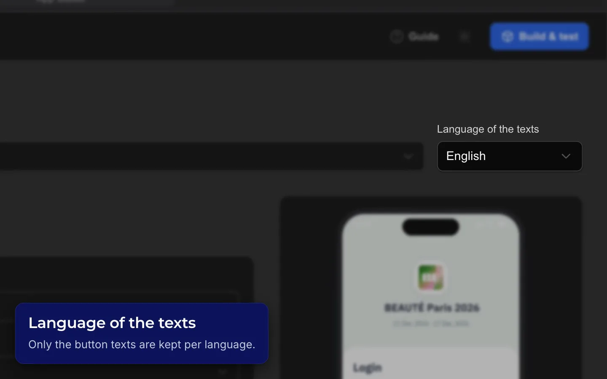
Language of the texts, set to English, at the top of Sign-in & registration.App Studio, redrawn and animated from its code. Phone: the app in App Studio's preview, with sample content, October 2026.Whole film
Each event keeps its own settings, chosen in Event, and only the button texts are kept per language, chosen in Language of the texts.
Watch out
Switching the event or the language drops unsaved edits without asking: save first.
The sign-in mode, the addresses and the switches hold one value for every language: changing one under any language changes it for all.
Native registration form and AI meeting notes are for the whole app, not only the event you are editing.
Done when: Every event, and every language your visitors use, is saved.
Stage 5 of 6
Set the sign-in pictures
Sign-in & registration has no field for the sign-in pictures, button colours or fonts: Colours & fonts sets them for each event.
12
In Colours & fonts, under Pictures, set the Login background, Login logo and Home / loading backdrop.
Your move
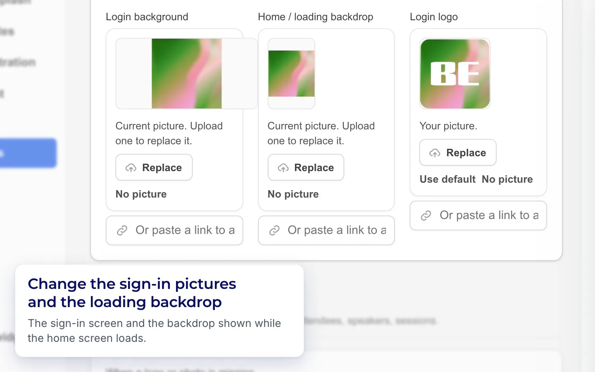
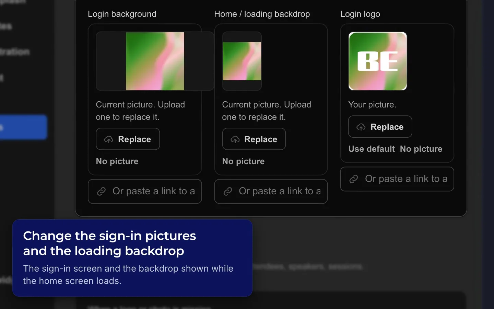
Pictures: Login background, Home / loading backdrop and Login logo, each with Replace.App Studio, redrawn and animated from its code.Whole film
Pictures is for “The sign-in screen and the backdrop shown while the home screen loads.”
Watch out
With several events, pick the event in the Colours header first.
A picture is stored as soon as you upload it, but the app uses it only after Save changes, which also saves Name, icon & splash.
To see the sign-in screen in the phone, choose Boot flow below the form: it walks through the splash, login and choose event.
Done when: Each picture you set says “Your picture.”, and you pressed Save changes.
Stage 6 of 6
Check what people see
Saved changes to sign-in, pictures, menu and home screen reach installed builds of this app the next time they refresh, with no new build.
13
If guests can enter, set View as to Guest (not signed in) in Menu & content and tap through each event's menu.
Your move
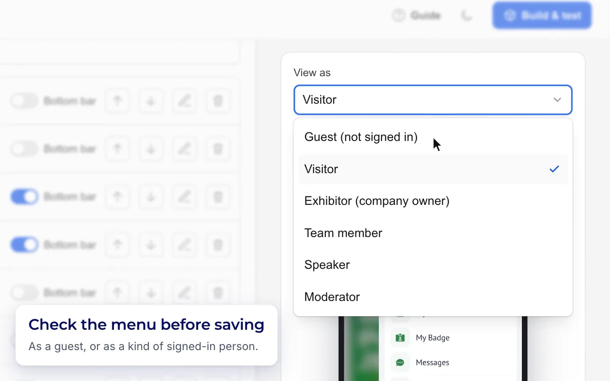
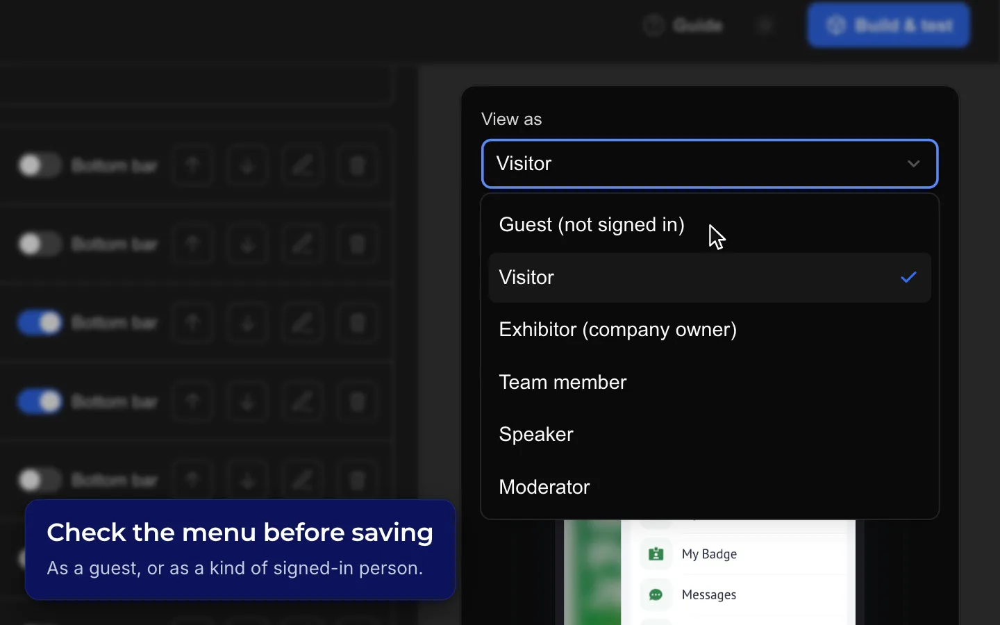
View as set to Guest (not signed in), then Visitor; the phone shows the app's splash.App Studio, redrawn and animated from its code. Phone: the app in App Studio's preview, with sample content, October 2026.Whole film
A menu item with anything ticked under Visible for is not shown to people who are not signed in.
Watch out
On the Home screen, each block's Who sees it is Everyone, Guests only or Signed-in only: check it with Guest preview.
On a page from Custom pages, Who sees it decides what the app shows but does not protect the page: “everything on a page can be read by anyone who has your app.”
After you pick another event in Event, set View as to Guest (not signed in) again: it starts on Visitor.
Done when: Seen as a guest, each event's menu holds what you want people to see before they sign in.
14
Check the sign-in screen on a phone with a build of this app installed, once the app has refreshed.
Your move
No new build
Sign-in & registration: at the next refresh
Colours & fonts, with the sign-in pictures: at the next refresh
Menu & content and Home screen: at the next refresh
Needs a new build and store release
The app icon
The name under the icon (in store builds, the store name)
The splash picture and its colour
Switching a home-screen widget on or off
Sign-in settings and pictures reach installed builds of this app with no new build or store release.
Watch out
Only saved changes reach phones, while the previews also show unsaved ones.
Your old apps never show what you save here: a phone shows it only once a build of this app is installed, a test build from Build & test first.
Done when: The phone's sign-in screen shows your texts, buttons and pictures.
Something's wrong?
Pick what you see.
Why: No event is chosen for the app yet, and these settings are kept per event.
What to do: In Events & updates, choose the event or the event tags and save, then choose an event in Event.
Why: It shows only while Show the register button is on and there is a registration address to open.
What to do: Switch it on and save; with Another website, fill in Registration website, and with The event's registration page, the event needs a registration page of its own to open.
Why: The preview shows only on wide screens and can stay loading when its data is refused; the second message means the preview could not get what it needs to start.
What to do: Use a wider window; if it stays loading, wait a moment, then open the section again; for the second message, try again in a minute.
Why: Sign-in & registration cannot change them, and its preview draws the event's stored ones; Colours & fonts sets them, and the app uses them only after Save changes there.
What to do: In Colours & fonts, with the right event picked, set them under Pictures, press Save changes, and check them there with Boot flow.
Why: Installed apps show saved changes the next time they refresh, and only saved changes reach them; your old apps never show them.
What to do: Check that you saved each event and language you changed, and that the phone has a build of this app, such as a test build from Build & test; it then shows them at its next refresh.
Every step comes from the App Studio guide. App Studio Playbook v1.1.1, built from the App Studio guide v1.1.0, checked against App Studio c1421d4 on 14 Oct 2026.
Show me: Let people sign in and register
Use ← and → to move
Words from a step or a problem, such as build, widget or greyed out.